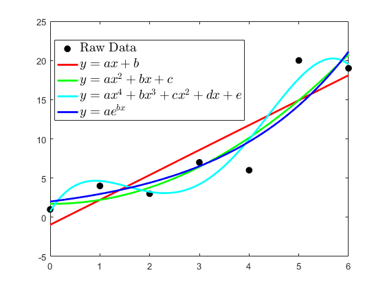
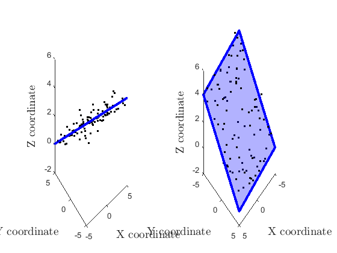
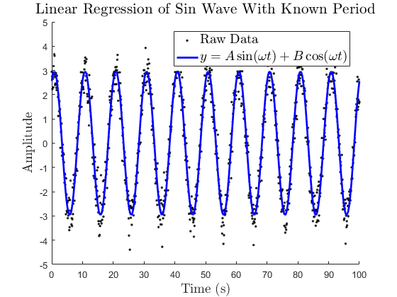
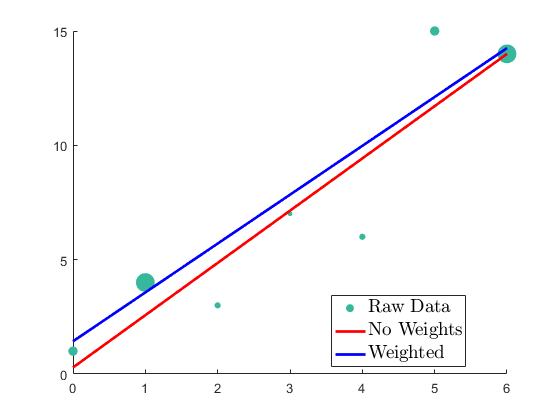
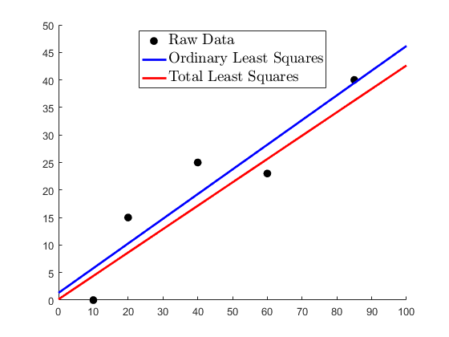
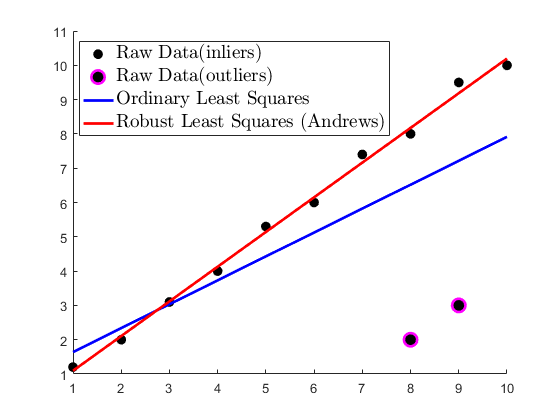
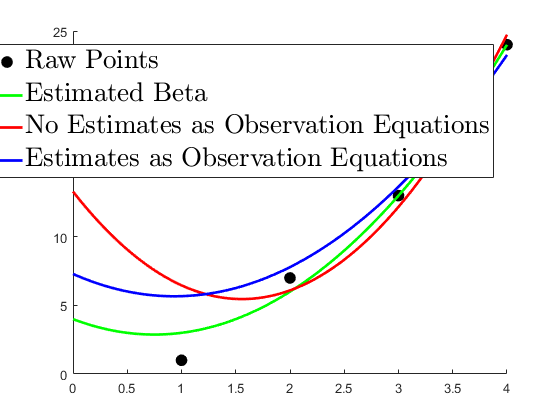

Contents
- Fit Different Models to a set of unweighted 2D data
- Fit Model to 3D Plane (Unweighted)
- Sin Wave With Known Period (Nonlinear Observation Equations)
- Different ways to weight equations
- 2D Conformal Transformation with covariances (Linear 2 Equations per Observation)
- Unweighted 3D Conformal Transformation (Nonlinear 3 Equations per observation)
- Linear Line with Total Least Squares
- Robust Least Squares for Line with outliers
- Chi2 Test for linear line, Dont Scale Covariance
- Analytical Jacobians
- Use Regression Coefficient Estimate as Observation Equations
- DerivStep
- 2D Conformal Transformation
- 3D Conformal Transformation
- BumpHdiag to make Jacobian wrt X more easily
function exampleLsr
Fit Different Models to a set of unweighted 2D data
raw data
x = [0 1 2 3 4 5 6]'; y = [1 4 3 7 6 20 19]'; % Linear Trend y = mx+b modelfunLinear = @(b,x) b(1)*x + b(2); betacoefLinear = lsr(x,y,modelfunLinear); % 2nd Order Polynomial y = ax^2+bx+c modelfunPoly2 = @(b,x) b(1)*x.^2 + b(2)*x +b(3); betacoefPoly2 = lsr(x,y,modelfunPoly2); % 4th Order Polynomial y = ax^4+bx^3+cx^2+dx+e modelfunPoly4 = @(b,x) b(1)*x.^4 + b(2)*x.^3 + b(3)*x.^2 + b(4)*x.^1 + b(5); betacoefPoly4 = lsr(x,y,modelfunPoly4); % Exponential (NonLinear) y = ae^(-bx) modelfunExp = @(b,x) b(1)*exp(b(2)*x); betacoef0 = [3 .5]'; betacoefExponential = lsr(x,y,modelfunExp,betacoef0); %plot xi = 0:0.1:6; f1 = figure(1);clf plot(x,y,'k.','markersize',25); hold on plot(xi,modelfunLinear(betacoefLinear,xi),'r','linewidth',2); plot(xi,modelfunPoly2(betacoefPoly2,xi),'g','linewidth',2); plot(xi,modelfunPoly4(betacoefPoly4,xi),'c','linewidth',2); plot(xi,modelfunExp(betacoefExponential,xi),'b','linewidth',2); legend({'Raw Data','$y = ax + b$','$y = ax^2+bx+c$','$y = ax^4+bx^3+cx^2+dx+e$','$y = ae^{bx}$'},... 'interpreter','latex','fontsize',14,'location','best')
Fit Model to 3D Plane (Unweighted)
beta = [a b c d] % ax + by + c = z
modelfun3Dplane = @(b,x)(b(1)*x(:,1) + b(2)*x(:,2) + b(3)); %generate 100 data points with X=[-5 5] Y=[-5 5] rng(1); truebeta = [-.1 -.5 2]'; xpts = (rand(100,1)-0.5)*10; ypts = (rand(100,1)-0.5)*10; zpts = modelfun3Dplane(truebeta,[xpts ypts]) + randn(100,1)*.5; % do least squares x = [xpts ypts]; y = zpts; betacoefPlane = lsr(x,y,modelfun3Dplane); %plot xi = [-5 -5 5 5 -5]'; yi = [-5 5 5 -5 -5]'; f2 = figure(2);clf subplot 121 plot3(xpts,ypts,zpts,'k.'); hold on % fill3(xi,yi,modelfun3Dplane(truebeta,[xi yi]),'g');alpha 0.3 fill3(xi,yi,modelfun3Dplane(betacoefPlane,[xi yi]),'b','edgecolor','b','linewidth',3); alpha 0.3 xlabel('X coordinate','interpreter','latex','fontsize',14); ylabel('Y coordinate','interpreter','latex','fontsize',14); zlabel('Z coordinate','interpreter','latex','fontsize',14); subplot 122 plot3(xpts,ypts,zpts,'k.'); hold on fill3(xi,yi,modelfun3Dplane(betacoefPlane,[xi yi]),'b','edgecolor','b','linewidth',3); alpha 0.3 xlabel('X coordinate','interpreter','latex','fontsize',14); ylabel('Y coordinate','interpreter','latex','fontsize',14); zlabel('Z coordinate','interpreter','latex','fontsize',14); view(135,35)
Sin Wave With Known Period (Nonlinear Observation Equations)
omega = 2*pi/10; %10 second period wave modelfunSinNonLinear = @(b,x) b(1)*sin(omega*x + b(2)); modelfunSinLinear = @(b,x) b(1)*sin(omega*x)+b(2)*cos(omega*x); % generate sample data t = 0:0.1:100; truebeta = [3 pi/3]; z = modelfunSinNonLinear(truebeta,t)+randn(size(t))*0.5; % Nonlinear x = t'; y = z'; betacoefSinNonLinear = lsr(x,y,modelfunSinNonLinear,truebeta,'verbose',true); % Linear betacoefSinLinear = lsr(x,y,modelfunSinLinear,'verbose',true); Amp = sqrt((betacoefSinLinear(1))^2+(betacoefSinLinear(2))^2); Phi = atan2(betacoefSinLinear(2),betacoefSinLinear(1)); % Plot f3 = figure(3);clf;hold on; plot(t,z,'k.'); plot(t,modelfunSinLinear(betacoefSinLinear,t),'b-','linewidth',2); legend({'Raw Data','$y = A\sin(\omega t) + B\cos(\omega t) $'},'interpreter','latex','fontsize',14) xlabel('Time (s)','interpreter','latex','fontsize',14); ylabel('Amplitude','interpreter','latex','fontsize',14); title('Linear Regression of Sin Wave With Known Period','interpreter','latex','fontsize',16)
--------------------------------------------------
NONLINEAR LEAST SQUARES
--------------------------------------------------
# of Observation Equations : 1001
# of Observations : 1001
# of Predictor Variables Per Observation : 1
# of Beta Coefficients : 2
# of Degrees of Freedom : 999
iter : So2 betacoef(1) betacoef(2)
1 : 0.2593490801 2.9584424918 1.0481343463
2 : 0.2584795529 2.9584438264 1.0481475053
3 : 0.2584795521 2.9584438267 1.0481475053
4 : 0.2584795521 2.9584438267 1.0481475053
--------------------------------------------------
LINEAR LEAST SQUARES
--------------------------------------------------
# of Observation Equations : 1001
# of Observations : 1001
# of Predictor Variables Per Observation : 1
# of Beta Coefficients : 2
# of Degrees of Freedom : 999
So2 betacoef(1) betacoef(2)
0.2584795521 1.4767873808 2.5634915462
 Different ways to weight equations
x = [0 1 2 3 4 5 6]'; y = [1 4 3 7 6 15 14]'; sigmaY = [2 1 3 4 3 2 1]; modelfunLinear = @(b,x) b(1)*x + b(2); % No weights betacoefNoWeight = lsr(x,y,modelfunLinear); % Weights as vector weightVector = 1./(sigmaY.^2); betacoefWeightVector = lsr(x,y,modelfunLinear,'Weights',weightVector); % Weights as Covariance Matrix covarianceMatrix = diag(sigmaY.^2); betacoefCovMatrix = lsr(x,y,modelfunLinear,'Weights',covarianceMatrix); % Plot xi = 0:0.1:6; f4 = figure(4);clf scatter(x,y,weightVector*200,ones(size(weightVector)),'filled'); hold on plot(xi,modelfunLinear(betacoefNoWeight,xi),'r','linewidth',2); plot(xi,modelfunLinear(betacoefWeightVector,xi),'b','linewidth',2); plot(xi,modelfunLinear(betacoefCovMatrix,xi),'b','linewidth',2); legend({'Raw Data','No Weights','Weighted'},... 'interpreter','latex','fontsize',14,'location','best')
2D Conformal Transformation with covariances (Linear 2 Equations per Observation)
x_coord2 = [1 2 3]; y_coord2 = [0 5 1]; % raw data 'to' x_coord1 = [6 1 8]; y_coord1 = [3 12 8]; % raw data 'from' Sc = [0.5 0.3 0 0 0 0; 0.3 0.5 0 0 0 0; 0 0 0.4 0.1 0 0; 0 0 0.1 0.2 0 0; 0 0 0 0 0.7 -0.4; 0 0 0 0 -0.4 0.4]; %variance-covariance of data2 modelfun = @conformal2d; y = nan(2*numel(x_coord1),1); y(1:2:end)=x_coord2; y(2:2:end)=y_coord2; x = [x_coord1' y_coord1']; betacoef2DConformal = lsr(x,y,modelfun,'Weights',Sc,'verbose',true);
Unweighted 3D Conformal Transformation (Nonlinear 3 Equations per observation)
modelConformal = @(b,x) conformal3dfun(b(1),b(2),b(3),b(4),b(5),b(6),b(7),x); % Here the scale is fixed == 1, and not solved as a beta coefficient modelConformalFixScale = @(b,x) conformal3dfun(1,b(1),b(2),b(3),b(4),b(5),b(6),x); %generate data xpts = (rand(10,1)-0.5)*100; ypts = (rand(10,1)-0.5)*100; zpts = (rand(10,1)-0.5)*100; x = [xpts ypts zpts]; truebeta = [1 pi/2 pi pi/4 2 3 4]'; XYZ = modelConformal(truebeta,x) + randn(3*numel(xpts),1); Xpts = XYZ(1:3:end); Ypts = XYZ(2:3:end); Zpts = XYZ(3:3:end); % do least squares y = [Xpts Ypts Zpts]'; y = y(:); betacoef0 = truebeta; betacoef3Dconformal = lsr(x,y,modelConformal,betacoef0,'verbose',true); betacoef3Dconformal2 = lsr(x,y,modelConformalFixScale,betacoef0(2:end),'verbose',true);
Linear Line with Total Least Squares
xpts = [10 20 60 40 85]; ypts = [0 15 23 25 40]; covxy = blkdiag([45 -30;-30 30],[20 -10;-10 70],[80 4;4 4],[40 -13;-13 60],[30 -25;-25 30]); modelfunLinear = @(b,x) b(1)*x + b(2); modelfunLinearTLS = @(b,x) b(1)*x(:,1) + b(2) -x(:,2); % ordinary least squares x = xpts'; y = ypts'; [betacoefOrdinary,V,J,CovB,So2,modelinfo]= lsr(x,y,modelfunLinear); % total least squares x = [xpts' ypts']; y = zeros(5,1); beteacoef0 = betacoefOrdinary; [betacoefTLS,V2,J2,CovB2,So22,modelinfo2] = lsr(x,y,modelfunLinearTLS,beteacoef0,'type','tls','Weights',covxy); % plot f5 = figure(5);clf;hold on; xi = 0:100; plot(xpts,ypts,'k.','markersize',25); plot(xi,modelfunLinear(betacoefOrdinary,xi),'b-','linewidth',2); plot(xi,modelfunLinear(betacoefTLS,xi),'r-','linewidth',2); legend({'Raw Data','Ordinary Least Squares',... 'Total Least Squares'},... 'interpreter','latex','fontsize',14,'location','best')
Robust Least Squares for Line with outliers
data has one outlier (8,12)
x = [1 2 3 4 5 6 7 8 9 10 8 9]'; y = [1.2 2 3.1 4 5.3 6 7.4 8 9.5 10 2 3]'; modelfunLinear = @(b,x) b(1)*x + b(2); % Ordinary Least Squares betacoefOrdinary = lsr(x,y,modelfunLinear,'verbose',true); % Robust Least Squares betacoefRobust = lsr(x,y,modelfunLinear,'RobustWgtFun','andrews','verbose',true); %plot f6 = figure(6);clf;hold on; plot(x(1:10),y(1:10),'k.','markersize',25); plot(x(11:12),y(11:12),'mo','MarkerFaceColor','k','linewidth',2,'markersize',10); plot(x,modelfunLinear(betacoefOrdinary,x),'b-','linewidth',2); plot(x,modelfunLinear(betacoefRobust,x),'r-','linewidth',2); legend({'Raw Data(inliers)','Raw Data(outliers)','Ordinary Least Squares',... 'Robust Least Squares (Andrews)'},... 'interpreter','latex','fontsize',14,'location','best')
--------------------------------------------------
LINEAR LEAST SQUARES
--------------------------------------------------
# of Observation Equations : 12
# of Observations : 12
# of Predictor Variables Per Observation : 1
# of Beta Coefficients : 2
# of Degrees of Freedom : 10
So2 betacoef(1) betacoef(2)
5.4361581633 0.6969387755 0.9433673469
--------------------------------------------------
ROBUST LINEAR LEAST SQUARES
--------------------------------------------------
# of Observation Equations : 12
# of Observations : 12
# of Predictor Variables Per Observation : 1
# of Beta Coefficients : 2
# of Degrees of Freedom : 10
iter : So2 betacoef(1) betacoef(2)
1 : 5.4361581633 0.6969387755 0.9433673469
2 : 3.9320826310 0.7646535995 0.7671002258
3 : 2.4769873550 0.8554285913 0.5165158702
4 : 0.0284422179 1.0114303858 0.0823895840
5 : 0.0287797264 1.0114630654 0.0828852170
6 : 0.0288056650 1.0114913113 0.0828333287
7 : 0.0288115783 1.0114988273 0.0828142497
8 : 0.0288129698 1.0115006405 0.0828094611
9 : 0.0288132990 1.0115010712 0.0828083162
10 : 0.0288133770 1.0115011733 0.0828080447
11 : 0.0288133954 1.0115011974 0.0828079804
12 : 0.0288133998 1.0115012032 0.0828079651
 Chi2 Test for linear line, Dont Scale Covariance
generate data
rng(2) stdy = 5; x = (0:1:50)'; modelfunLinear = @(b,x) b(1)*x + b(2); truebeta = [1 2]; y = modelfunLinear(truebeta,x)+randn(size(x))*stdy; CovarianceMatrix = diag(ones(size(x)))*stdy.^2; % Linear With Covariance Scaled Correctly [betacoefA,~,~,CovB_A,MSEA,ErrorModelInfoA] = lsr(x,y,modelfunLinear,'Weights',CovarianceMatrix); % Linear With Covariance Scaled High (Overestimating Errors) [betacoefB,~,~,CovB_B,MSEB,ErrorModelInfoB] = lsr(x,y,modelfunLinear,'Weights',CovarianceMatrix*5); % Linear With Covariance Scaled Low (UnderEstimating Errors) [betacoefC,~,~,CovB_C,MSEC,ErrorModelInfoC] = lsr(x,y,modelfunLinear,'Weights',CovarianceMatrix/5); % Linear With Covariance Scaled Correctly and CovB Not Scaled [betacoefD,~,~,CovB_D,MSED,ErrorModelInfoD] = lsr(x,y,modelfunLinear,'Weights',CovarianceMatrix,'scalecov',false); % Test with fixed chi2alpha [betacoefE,~,~,CovB_E,MSEE,ErrorModelInfoE] = lsr(x,y,modelfunLinear,'Weights',CovarianceMatrix,'chi2alpha',0.10); % Print Results fprintf('%s\n\tCovariance Chi2 Test\n%s\n',repmat('x',1,40),repmat('x',1,40)); fprintf('%40s | %15s | %15s | %10s | %10s | %10s | %10s\n','Type',... 'BetaCoef(1)','BetaCoef(2)','So2','So2Low','So2High','Chi2 Test'); fprintf('%40s | %15s | %15s | %10f | %10f | %10f | %10s\n','Correct Scale',... sprintf('%.3f %s %.3f',betacoefA(1),177,sqrt(CovB_A(1,1))),... sprintf('%.3f %s %.3f',betacoefA(2),177,sqrt(CovB_A(2,2))),... MSEA,ErrorModelInfoA.chi2.So2low,ErrorModelInfoA.chi2.So2high,'PASS @ 5%') fprintf('%40s | %15s | %15s | %10f | %10f | %10f | %10s\n','Overestimate Uncertainty',... sprintf('%.3f %s %.3f',betacoefB(1),177,sqrt(CovB_B(1,1))),... sprintf('%.3f %s %.3f',betacoefB(2),177,sqrt(CovB_B(2,2))),... MSEB,ErrorModelInfoB.chi2.So2low,ErrorModelInfoB.chi2.So2high,'FAIL @ 5%') fprintf('%40s | %15s | %15s | %10f | %10f | %10f | %10s\n','Underestimate Uncertainty',... sprintf('%.3f %s %.3f',betacoefC(1),177,sqrt(CovB_C(1,1))),... sprintf('%.3f %s %.3f',betacoefC(2),177,sqrt(CovB_C(2,2))),... MSEC,ErrorModelInfoC.chi2.So2low,ErrorModelInfoC.chi2.So2high,'FAIL @ 5%') fprintf('%40s | %15s | %15s | %10f | %10f | %10f | %10s\n','Correct Scale (noscale = true)',... sprintf('%.3f %s %.3f',betacoefD(1),177,sqrt(CovB_D(1,1))),... sprintf('%.3f %s %.3f',betacoefD(2),177,sqrt(CovB_D(2,2))),... MSED,ErrorModelInfoD.chi2.So2low,ErrorModelInfoD.chi2.So2high,'PASS @ 5%') fprintf('%40s | %15s | %15s | %10f | %10f | %10f | %10s\n','Correct Scale (chi2alpha = 0.1)',... sprintf('%.3f %s %.3f',betacoefE(1),177,sqrt(CovB_E(1,1))),... sprintf('%.3f %s %.3f',betacoefE(2),177,sqrt(CovB_E(2,2))),... MSEE,ErrorModelInfoE.chi2.So2low,ErrorModelInfoE.chi2.So2high,'PASS @ 10%') % Notice that the betacoef doesnt change, only the scale of the error % estimates in CovB and the chi2 test limits when alpha is changed
xxxxxxxxxxxxxxxxxxxxxxxxxxxxxxxxxxxxxxxx
Covariance Chi2 Test
xxxxxxxxxxxxxxxxxxxxxxxxxxxxxxxxxxxxxxxx
Type | BetaCoef(1) | BetaCoef(2) | So2 | So2Low | So2High | Chi2 Test
Correct Scale | 1.125 ± 0.044 | -1.626 ± 1.278 | 0.857151 | 0.643978 | 1.433110 | PASS @ 5%
Overestimate Uncertainty | 1.125 ± 0.044 | -1.626 ± 1.278 | 0.171430 | 0.643978 | 1.433110 | FAIL @ 5%
Underestimate Uncertainty | 1.125 ± 0.044 | -1.626 ± 1.278 | 4.285756 | 0.643978 | 1.433110 | FAIL @ 5%
Correct Scale (noscale = true) | 1.125 ± 0.048 | -1.626 ± 1.380 | 0.857151 | 0.643978 | 1.433110 | PASS @ 5%
Correct Scale (chi2alpha = 0.1) | 1.125 ± 0.044 | -1.626 ± 1.278 | 0.857151 | 0.692455 | 1.353850 | PASS @ 10%
Analytical Jacobians
sine wave with known period
omega = 2*pi/10; %10 second period wave modelfunSinNonLinear = @(b,x) b(1)*sin(omega*x + b(2)); % need both x and y on same side of equation for TLS modelfunSinNonLinearTLS = @(b,x) b(1)*sin(omega*x(:,1) + b(2))-x(:,2); % Partial Derivative With Respect to Beta Regression Coefficients modelfunSinNonLinearJB = @(b,x) [sin(omega*x(:,1) + b(2)) b(1)*cos(omega*x(:,1) + b(2))]; % Partial Derivative With Respect to Predictor Variables modelfunSinNonLinearJX = @(b,x) ... bumphdiag([b(1)*omega*cos(b(2) + omega*x(:,1)) -ones(size(x(:,2)))],1); % generate sample data t = rand(1,100)*100; truebeta = [3 pi/3]; z = modelfunSinNonLinear(truebeta,t)+randn(size(t))*0.5; % Nonlinear x = [t' z']; y = zeros(size(t')); betacoefSinNonLinear = lsr(x,y,modelfunSinNonLinearTLS,truebeta,'verbose',true,... 'type','tls'); betacoefExplicitPartials = lsr(x,y,modelfunSinNonLinearTLS,truebeta,'verbose',true,... 'JacobianYB',modelfunSinNonLinearJB,'JacobianYX',modelfunSinNonLinearJX,... 'type','tls');
-------------------------------------------------- TOTAL LEAST SQUARES -------------------------------------------------- # of Observation Equations : 100 # of Observations : 100 # of Predictor Variables Per Observation : 2 # of Beta Coefficients : 2 # of Degrees of Freedom : 98 iter : So2 betacoef(1) betacoef(2) 1 : 0.1006475460 3.0187517454 1.0502620140 2 : 0.0999646667 3.0188071072 1.0504303438 3 : 0.0999596234 3.0188256408 1.0504356388 4 : 0.0999590181 3.0188259489 1.0504358912 5 : 0.0999590046 3.0188259730 1.0504359003 6 : 0.0999590038 3.0188259736 1.0504359007 7 : 0.0999590037 3.0188259737 1.0504359007 8 : 0.0999590037 3.0188259737 1.0504359007 -------------------------------------------------- TOTAL LEAST SQUARES -------------------------------------------------- # of Observation Equations : 100 # of Observations : 100 # of Predictor Variables Per Observation : 2 # of Beta Coefficients : 2 # of Degrees of Freedom : 98 iter : So2 betacoef(1) betacoef(2)
Use Regression Coefficient Estimate as Observation Equations
y = ax^2+bx+c
x = [0 1 2 3 4]'; y = [15 1 7 13 24]'; Syy = diag([1 1.5 1.3 0.3 0.5]); betaest = [2 -3 4]; Sbb = diag([0.1 0.1 1]); modelfun = @(b,x) b(1)*x.^2 + b(2)*x + b(3); betacoef = lsr(x,y,modelfun,betaest,'weights',Syy,'verbose',true); betacoefEst = lsr(x,y,modelfun,betaest,'weights',Syy,'betaCoef0Cov',Sbb,'verbose',true); f7 = figure(7);clf;hold on xi = 0:0.01:4; plot(x,y,'k.','markersize',30) plot(xi,modelfun(betaest,xi),'g','linewidth',2); plot(xi,modelfun(betacoef,xi),'r','linewidth',2); plot(xi,modelfun(betacoefEst,xi),'b','linewidth',2); legend({'Raw Points','Estimated Beta','No Estimates as Observation Equations','Estimates as Observation Equations'},... 'fontsize',20,'interpreter','latex')
--------------------------------------------------
LINEAR LEAST SQUARES
--------------------------------------------------
# of Observation Equations : 5
# of Observations : 5
# of Predictor Variables Per Observation : 1
# of Beta Coefficients : 3
# of Degrees of Freedom : 2
So2 betacoef(1) betacoef(2) betacoef(3)
13.3711934735 3.2301849638 -10.0602011393 13.2945354807
CHI^2 GOODNESS OF FIT TEST (Significance=0.05, dof=2, So2=13.371)
Ho 13.371 == 1
H1 13.371 =/= 1
Statistical Test : (0.025 < 13.371 < 3.689)
**FAIL**
--------------------------------------------------
LINEAR LEAST SQUARES
--------------------------------------------------
# of Observation Equations : 8
# of Observations : 5
# of Predictor Variables Per Observation : 1
# of Beta Coefficients : 3
# of Degrees of Freedom : 5
So2 betacoef(1) betacoef(2) betacoef(3)
18.0781507793 1.8701691465 -3.4905331887 7.2936446231
CHI^2 GOODNESS OF FIT TEST (Significance=0.05, dof=2, So2=18.078)
Ho 18.078 == 1
H1 18.078 =/= 1
Statistical Test : (0.025 < 18.078 < 3.689)
**FAIL**
 DerivStep
modelConformal = @(b,x) conformal3dfun(b(1),b(2),b(3),b(4),b(5),b(6),b(7),x); %generate data xpts = (rand(10,1)-0.5)*100; ypts = (rand(10,1)-0.5)*100; zpts = (rand(10,1)-0.5)*100; x = [xpts ypts zpts]; truebeta = [1 pi/2 pi pi/4 2 3 4]'; XYZ = modelConformal(truebeta,x) + randn(3*numel(xpts),1); Xpts = XYZ(1:3:end); Ypts = XYZ(2:3:end); Zpts = XYZ(3:3:end); % do least squares y = [Xpts Ypts Zpts]'; y = y(:); betacoef0 = truebeta; betacoef3Dconformal = lsr(x,y,modelConformal,betacoef0,'verbose',true); betacoef3Dconformal = lsr(x,y,modelConformal,betacoef0,'verbose',true,'derivstep',3); % No real good reason to change the deriv step, but hey, its there
end
2D Conformal Transformation
function y = conformal2d(beta,x) % 2D conformal coordinate transformation (beta = [a;b;c;d], x = [xc(:) yc(:)]) nObservations = size(x,1); y = nan(nObservations*2,1); y(1:2:end) = beta(1)*x(:,1) - beta(2)*x(:,2) + beta(3); y(2:2:end) = beta(2)*x(:,1) + beta(1)*x(:,2) + beta(4); end
--------------------------------------------------
LINEAR LEAST SQUARES
--------------------------------------------------
# of Observation Equations : 6
# of Observations : 3
# of Predictor Variables Per Observation : 2
# of Beta Coefficients : 4
# of Degrees of Freedom : 2
So2 betacoef(1) betacoef(2) betacoef(3) betacoef(4)
0.1561960619 0.3762572156 -0.3503996761 -2.6154824607 0.7605243357
CHI^2 GOODNESS OF FIT TEST (Significance=0.05, dof=2, So2=0.156)
Ho 0.156 == 1
H1 0.156 =/= 1
Statistical Test : (0.025 < 0.156 < 3.689)
**PASS** * Test Passed, consider setting 'scalecov' == false
3D Conformal Transformation
3D Conformal Transformation
function [X,Y,Z] = conformal3d(S,omega,phi,kappa,Tx,Ty,Tz,x,y,z) Rx = [1 0 0; 0 cos(omega) sin(omega); 0 -sin(omega) cos(omega)]; Ry = [cos(phi) 0 -sin(phi); 0 1 0;sin(phi) 0 cos(phi)]; Rz = [cos(kappa) sin(kappa) 0; -sin(kappa) cos(kappa) 0; 0 0 1]; R = Rx*Ry*Rz; XYZ = S * R * [x(:)';y(:)';z(:)'] + repmat([Tx; Ty; Tz],1,numel(x)); X = XYZ(1,:)'; Y = XYZ(2,:)'; Z = XYZ(3,:)'; end % 3D Conformal Transformation Combined to Vector output function y = conformal3dfun(S,omega,phi,kappa,Tx,Ty,Tz,x) [X,Y,Z] = conformal3d(S,omega,phi,kappa,Tx,Ty,Tz,x(:,1),x(:,2),x(:,3)); y = [X Y Z]'; y = y(:); end
-------------------------------------------------- NONLINEAR LEAST SQUARES -------------------------------------------------- # of Observation Equations : 30 # of Observations : 10 # of Predictor Variables Per Observation : 3 # of Beta Coefficients : 7 # of Degrees of Freedom : 23 iter : So2 betacoef(1) betacoef(2) betacoef(3) betacoef(4) betacoef(5) betacoef(6) betacoef(7) 1 : 1.9537272989 1.0047847021 1.5704697614 3.1411191915 0.7818324786 2.4256505021 3.3922229380 3.9429993699 2 : 1.7735276366 1.0047884879 1.5705003100 3.1410933579 0.7818948856 2.4260093877 3.3923450874 3.9427806009 3 : 1.7735254087 1.0047884893 1.5705000976 3.1410937799 0.7818936190 2.4259987337 3.3923452584 3.9427865284 4 : 1.7735254080 1.0047884893 1.5705001057 3.1410937704 0.7818936398 2.4259989072 3.3923452835 3.9427864343 5 : 1.7735254080 1.0047884893 1.5705001057 3.1410937705 0.7818936394 2.4259989038 3.3923452831 3.9427864361 6 : 1.7735254080 1.0047884893 1.5705001057 3.1410937705 0.7818936394 2.4259989039 3.3923452831 3.9427864362 -------------------------------------------------- NONLINEAR LEAST SQUARES -------------------------------------------------- # of Observation Equations : 30 # of Observations : 10 # of Predictor Variables Per Observation : 3 # of Beta Coefficients : 6 # of Degrees of Freedom : 24 iter : So2 betacoef(1) betacoef(2) betacoef(3) betacoef(4) betacoef(5) betacoef(6) 1 : 1.8723219948 1.5704697614 3.1411191915 0.7818324786 2.4025663119 3.3960007656 3.9017722539 2 : 1.7159970933 1.5705004561 3.1410932343 0.7818951842 2.4030559911 3.3961502727 3.9014399914 3 : 1.7159949910 1.5705000948 3.1410937846 0.7818936054 2.4030427849 3.3961497738 3.9014472577 4 : 1.7159949900 1.5705001059 3.1410937702 0.7818936402 2.4030430746 3.3961497995 3.9014470992 5 : 1.7159949900 1.5705001057 3.1410937705 0.7818936394 2.4030430678 3.3961497995 3.9014471030 6 : 1.7159949900 1.5705001057 3.1410937705 0.7818936394 2.4030430679 3.3961497995 3.9014471028
-------------------------------------------------- NONLINEAR LEAST SQUARES -------------------------------------------------- # of Observation Equations : 30 # of Observations : 10 # of Predictor Variables Per Observation : 3 # of Beta Coefficients : 7 # of Degrees of Freedom : 23 iter : So2 betacoef(1) betacoef(2) betacoef(3) betacoef(4) betacoef(5) betacoef(6) betacoef(7) 1 : 0.9819307461 1.0059767092 1.5648291517 3.1398107425 0.7949781132 1.8761148280 3.1693491061 4.4505782435 2 : 0.8458555061 1.0060269131 1.5648260252 3.1398331257 0.7949229912 1.8758155431 3.1685558028 4.4515355632 3 : 0.8458485168 1.0060269145 1.5648261716 3.1398330862 0.7949230953 1.8758175890 3.1685579511 4.4515334026 4 : 0.8458485167 1.0060269145 1.5648261717 3.1398330857 0.7949230946 1.8758175934 3.1685579589 4.4515333912 5 : 0.8458485167 1.0060269145 1.5648261717 3.1398330857 0.7949230946 1.8758175935 3.1685579589 4.4515333909 -------------------------------------------------- NONLINEAR LEAST SQUARES -------------------------------------------------- # of Observation Equations : 30 # of Observations : 10 # of Predictor Variables Per Observation : 3 # of Beta Coefficients : 7 # of Degrees of Freedom : 23 iter : So2 betacoef(1) betacoef(2) betacoef(3) betacoef(4) betacoef(5) betacoef(6) betacoef(7) 1 : 0.9819307461 1.0059767092 1.5618230860 3.1389130745 0.7998041754 1.8761148282 3.1693491063 4.4505782434 2 : 0.8785855192 1.0060138380 1.5663026639 3.1403338523 0.7924723860 1.8752918560 3.1680052617 4.4521920988 3 : 0.8540436926 1.0060236388 1.5640985150 3.1395695651 0.7961554708 1.8759828811 3.1687902391 4.4512545167 4 : 0.8479040388 1.0060260918 1.5651841141 3.1399731682 0.7943037631 1.8757114470 3.1684318113 4.4516840005 5 : 0.8463638275 1.0060267081 1.5646499822 3.1397593368 0.7952345024 1.8758642648 3.1686175867 4.4514621580 6 : 0.8459778374 1.0060268626 1.5649128301 3.1398719183 0.7947665208 1.8757928877 3.1685276311 4.4515695290 7 : 0.8458809777 1.0060269014 1.5647835485 3.1398127203 0.7950018380 1.8758294840 3.1685727941 4.4515157345 8 : 0.8458566703 1.0060269112 1.5648471267 3.1398437485 0.7948834892 1.8758115897 3.1685505508 4.4515421921 9 : 0.8458505656 1.0060269136 1.5648158717 3.1398275166 0.7949430183 1.8758205524 3.1685616185 4.4515290506 10 : 0.8458490319 1.0060269143 1.5648312326 3.1398359892 0.7949130705 1.8758161172 3.1685561409 4.4515355438 11 : 0.8458486463 1.0060269144 1.5648236858 3.1398315748 0.7949281387 1.8758183257 3.1685588597 4.4515323265 12 : 0.8458485493 1.0060269144 1.5648273924 3.1398338708 0.7949205560 1.8758172293 3.1685575122 4.4515339183 13 : 0.8458485249 1.0060269145 1.5648255726 3.1398326785 0.7949243724 1.8758177745 3.1685581806 4.4515331301 14 : 0.8458485188 1.0060269145 1.5648264657 3.1398332967 0.7949224513 1.8758175036 3.1685578492 4.4515335202 15 : 0.8458485173 1.0060269145 1.5648260275 3.1398329766 0.7949234185 1.8758176383 3.1685580136 4.4515333271 16 : 0.8458485169 1.0060269145 1.5648262424 3.1398331421 0.7949229315 1.8758175713 3.1685579320 4.4515334227 17 : 0.8458485168 1.0060269145 1.5648261371 3.1398330566 0.7949231767 1.8758176046 3.1685579725 4.4515333754 18 : 0.8458485167 1.0060269145 1.5648261887 3.1398331007 0.7949230532 1.8758175881 3.1685579524 4.4515333988 19 : 0.8458485167 1.0060269145 1.5648261634 3.1398330780 0.7949231154 1.8758175963 3.1685579624 4.4515333872 20 : 0.8458485167 1.0060269145 1.5648261758 3.1398330897 0.7949230841 1.8758175922 3.1685579574 4.4515333929 21 : 0.8458485167 1.0060269145 1.5648261697 3.1398330837 0.7949230999 1.8758175942 3.1685579599 4.4515333901 22 : 0.8458485167 1.0060269145 1.5648261727 3.1398330868 0.7949230919 1.8758175932 3.1685579587 4.4515333915 23 : 0.8458485167 1.0060269145 1.5648261712 3.1398330852 0.7949230959 1.8758175937 3.1685579593 4.4515333908 24 : 0.8458485167 1.0060269145 1.5648261720 3.1398330860 0.7949230939 1.8758175935 3.1685579590 4.4515333911 25 : 0.8458485167 1.0060269145 1.5648261716 3.1398330856 0.7949230949 1.8758175936 3.1685579591 4.4515333910 26 : 0.8458485167 1.0060269145 1.5648261718 3.1398330858 0.7949230944 1.8758175936 3.1685579590 4.4515333911 27 : 0.8458485167 1.0060269145 1.5648261717 3.1398330857 0.7949230947 1.8758175936 3.1685579591 4.4515333910
BumpHdiag to make Jacobian wrt X more easily
function hx = bumphdiag(x,n) % pad a matrix with 0s while shifting n rows at a time over on blkdiag % This is useful when doing partial derivatives wrt predictor variables % % ie, with n=1 % 1 2 3 1 2 3 0 0 0 0 0 0 0 0 0 % 4 5 6 -> 0 0 0 4 5 6 0 0 0 0 0 0 % 7 8 9 0 0 0 0 0 0 7 8 9 0 0 0 % 2 4 6 0 0 0 0 0 0 0 0 0 2 4 6 % % ie, with n=2 % 1 2 3 1 2 3 0 0 0 % 4 5 6 -> 4 5 6 0 0 0 % 7 8 9 0 0 0 7 8 9 % 2 4 6 0 0 0 2 4 6 % [M,N]=size(x); irow = kron((1:M)',ones(1,N)); icol = nan(N,M/n); icol(:) = 1:numel(icol); icol = kron(icol.',ones(n,1)); hx = sparse(irow,icol,x); end
1 : 0.1006475460 3.0187517456 1.0502620139 2 : 0.0999646667 3.0188071073 1.0504303438 3 : 0.0999596234 3.0188256410 1.0504356387 4 : 0.0999590181 3.0188259490 1.0504358911 5 : 0.0999590046 3.0188259731 1.0504359002 6 : 0.0999590038 3.0188259738 1.0504359006 7 : 0.0999590038 3.0188259738 1.0504359007 8 : 0.0999590038 3.0188259738 1.0504359007 9 : 0.0999590038 3.0188259738 1.0504359007 10 : 0.0999590038 3.0188259738 1.0504359007 11 : 0.0999590038 3.0188259738 1.0504359007